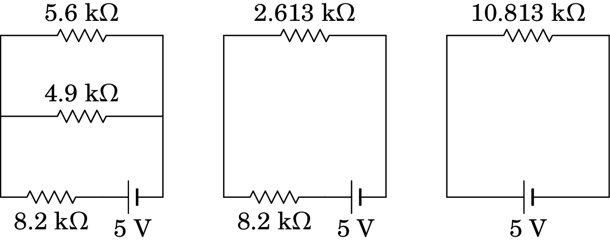
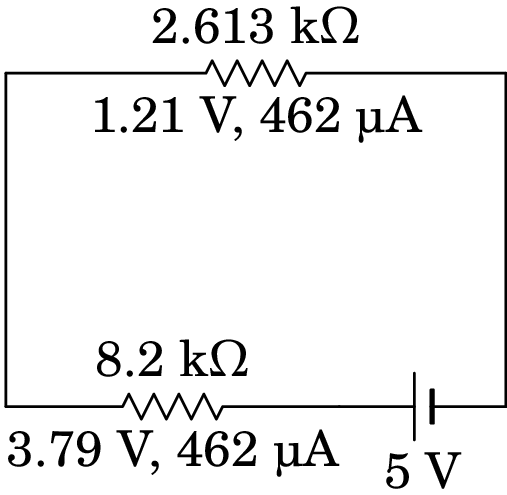

5. Força eletromotriz, corrente e resistência
Problema 5.1
Determine o trabalho realizado por uma pilha de 9 V, que fornece uma corrente de 235 mA durante 5 minutos.
Resolução. A potência fornecida pela pilha é:
e o trabalho realizado é igual à energia fornecida durante os 5 minutos:
Problema 5.2
Uma certa bateria de automóvel tem carga máxima de 250 Ah, que
corresponde à carga disponível quando está carregada a 100%.
(a) Depois de algum uso, a bateria descarrega até 60% da sua
carga máxima. Qual é a carga, em coulomb, com que fica a bateria?
(b) A seguir, a bateria liga-se a um carregador de 12 V para
a recarregar e observa-se que inicialmente a corrente do carregador
tem intensidade de 7 A, mas 6 horas depois diminui a 3 A. Admitindo
diminuição linear da corrente em ordem ao tempo, com que percentagem
da sua carga máxima fica a bateria no fim das 6 horas?
Resolução. (a) Após ter descarregado pelo uso, a carga, que é 60% da carga máxima inicial de 250 A·h, que em coulomb é igual a:
(b) Como a corrente diminui linearmente, a corrente média durante as 6 horas é a média entre a corrente inicial e final:
A carga transferida para a bateria durante as 6 horas, é igual à corrente média vezes o tempo:
e como a bateria descarregada tinha carga de A·h, a carga final dividida pela inicial será:
Ou seja, a bateria fica com 72% da sua carga inicial.
Comentários: Também podíamos ter determinado a carga transferida para a bateria encontrando a equação da reta correspondente a 7 A em e 3 A em (tempo medido em horas) que é:
E a carga transferida é o integral dessa expressão, entre 0 a 6 horas:
Problema 5.3
A corrente num cabo varia de acordo com a função
, onde mede-se em miliampere e em
segundos.
(a) Que carga transporta o cabo desde até
s?
(b) Qual o valor da corrente constante que
transporta a mesma quantidade de carga no mesmo intervalo de tempo?
(a) A carga transferida é igual ao integral da corrente, em ordem ao tempo, no intervalo de tempo em questão:
As unidades de eram mA e as unidades de segundos. Como tal, o resultado está em mA·s que são mC. A carga transferida é então C.
(b) A corrente média nesse intervalo é , ou seja, seria necessária uma corrente constante de 120 mA para transferir a mesma carga nos mesmos 10 segundos.
Problema 5.4
Num condutor ligado a uma pilha com f.e.m. de 1.5 V, circulam
eletrões de condução durante 2 horas. Determine:
(a) A intensidade da corrente média.
(b) A energia fornecida pela pilha durante esse intervalo.
(c) A potência média fornecida pela pilha.
(d) Se a carga inical da pilha era de 3 A·h, com que carga
fica após as 2 horas?
Resolução. (a) O valor absoluto da carga transferida é o número de eletrões transferidos vezes a carga elementar. A corrente média, em ampere, é a carga transferida, em Coulomb, dividida pelo tempo, em segundos:
(b) A energia fornecida é igual à carga transferida, vezes a força eletromotriz:
(c) A potência média fornecida é igual ao produto entre força eletromotriz (constante) e a corrente média (ou, também, energia fornecida dividida pelo intervalo de tempo):
(d) A carga final é igual à carga inicial, menos a carga transferida durante as 2 horas. Em unidades de A·h, a carga transferida é igual à corrente média, em ampere, vezes o intervalo de tempo, em horas:
Problema 5.5
No circuito da figura, determine a resistência equivalente:
(a) entre B e D,
(b) entre A e B,
(c) entre A e D
Resolução.(a) Para determinar a resistência entre B e D, admitimos que há um medidor de resistências ligado nesses pontos, mas não há nada ligado nos pontos A e C. Como tal, as correntes nas resistências de 560 , 220 e 180 são iguais e, como tal, essas 3 resistências estão em série, podendo ser substituídas por uma única resistência de 960 . De forma análoga, as correntes nas resistências de 330 , 150 e 270 são iguais e, podendo ser substituídas por uma única resistência de 750 . Com essas duas substituições obtém-se o seguinte circuito equivalente:
Cada uma das três resistências nesse circuito está ligada entre os pontos B e D. Como tal, as três resistências estão em paralelo e a resistência equivalente entre B e D é:
(b) Para determinar a resistência entre A e B, as resistências de 220 e 180 estão em série (equivalente a 400 ), mas não estão em série com a de 560 , porque em A entra ou sai corrente para o medidor de resistência. As resistências de 330 , 150 e 270 também estão em série, porque não há nada ligado em C, sendo equivalentes a uma única resistência de 750 :
As resistências de 120 e 750 , que estão em paralelo, podem ser substituídas pela resistência equivalente,
As resistências de 400 e 3000/29 , em série porque não há nada ligado em D, são equivalentes a 14600/29
E essas duas resistências estão em paralelo, sendo a resistência equivalente entre A e B igual a:
(c) Para determinar a resistência equivalente entre A e D, podem-se usar os mesmos dois primeiros passos da alínea anterior, conduzindo ao circuito equivalente:
As resistências de 560 e 3000/29 , em série porque não há nada ligado em B, são equivalentes a 19240/29
Finalmente, essas duas resistências estão em paralelo e a resistência equivalente entre A e D é:
Comentário: O método usado aqui não poderia ser usado para encontrar a resistência equivalente entre A e C. O único que poderíamos fazer seria combinar as resistências de 220 e 180 em série, e as resistências de 150 e 270 em série. Mas a seguir fica-se com um circuito em que nenhumas das resistências estão ou em série ou em paralelo. Nesse caso pode usar-se uma transformação delta-estrela, que será explicada no capítulo 6.
Problema 5.6
Determine a corrente e a diferença de potencial em cada resistência:

Resolução. As quatro resistências podem ser combinadas numa só, usando os três passos indicados na figura seguinte. Primeiro combinam-se as resistências de 2.7 k e 2.2 k, em série, a seguir a resultante combina-se, em paralelo, com a resistência de 5.6 k e a resultante combina-se em série com a resistência de 8.2 k.
Com uma única resistência ligada à f.e.m. de 5 V, a diferença de potencial nessa resistência são 5 V e a corrente é:
Substituindo a resistência de 10.813 k pelas resistências de 2.613 k e 8.2 k em série, como mostra a figura seguinte, a corrente de 462 µA será igual nas duas e as diferenças de potencial serão essa corrente multiplicada pelas duas resistências.
Observe-se que os resultados das diferenças de potencial foram ambos arredondados a duas casas decimais e de forma a que a soma deles seja igual aos 5 V da f.e.m.
Substituindo a resistência de 2.613 k pelas resistências de 5.6 k e 4.9 k em paralelo, a diferença de potencial nessas duas resistências em paralelo será a mesma, 1.21 V, e as correntes nas duas resistências obtêm-se usando a lei de Ohm:
Arredondando as correntes para números inteiros, de forma consistente com o circuito anterior, usaremos 216 e 246 como mostra a figura seguinte (a soma deverá ser 462 e 246.939 está mais próximo de 246 do que 216.071 em relação a 215).

Finalmente, substitui-se a resistência de 4.9 k pelas resistências de 2.7 k e 2.2 k, recuperando-se o circuito original. Nessas duas resistências em série a corrente de 246 µA será a mesma, e as diferenças de potencial obtêm-se multiplicando essa corrente pelos valores das duas resistências. A figura seguinte mostra a diferença de potencial e a corrente em todas as resistências do circuito original.

Problema 5.7
A temperatura num dado momento é 12 °C. Quanto deve aumentar a temperatura para que a resistência de um fio de cobre aumente 10%?
Resolução. Se for a resistência a 12 °C, a resistência à temperatura procurada será . As duas resistências podem ser relacionadas com a resistência , a 20 °C, usando o valor do coeficiente de temperatura do cobre a 20 °C, :
Dividindo a segunda equação pela primeira, obtém-se uma equação que permite calcular :
Como tal, a temperatura deverá aumentar 24.0 °C (de 12 °C para 36.0 °C).
Problema 5.8
A resistência de uma lâmpada incandescente de 60 W e 230 V, medida à temperatura ambiente de 20 °C, é . No entanto, as especificações do fabricante (60 W e 230 V) conduzem a um valor muito mais elevado da resistência. Justifique a diferença, e calcule a temperatura do filamento de tungsténio quando a lâmpada se encontra acesa.
Resolução. A potência e voltagem nominais, indicadas pelo fabricante, permitem determinar o valor da resistência nominal, usando a expressão da potência numa resistência, ,
Essa será a resistência da lâmpada quando for ligada à voltagem de 230 V, com uma temperatura elevada que faz com que ilumine. A resistência a 20 °C, , é muito menor porque a essa temperatura a lâmpada não aquece o suficiente para iluminar. A temperatura da lâmpada acessa obtém-se a partir da relação entre a resistência e a temperatura, usando o coeficiente de temperatura do tungsténio a 20 °C, igual a
Quando a diferença de potencial na lâmpada for de 230 V, o filamento aquecerá ate 2822 °C, produzindo luz.
Comentários: O resultado anterior é apenas uma aproximação, já que a relação entre resistência e temperatura provavelmente já não será linear à temperatura elevada da lâmpada. De qualquer forma, a temperatura deve ser da ordem dos milhares de graus Celsius para que o filamento produza luz visível. A lâmpada não queima porque dentro dela não há oxigênio. O mecanismo de produção de luz usado nas lâmpadas incandescentes (aquecer um filamento) é muito ineficiente, pois grande parte da energia elétrica é dissipada em calor; as lâmpadas fluorescentes são muito mais eficientes. Hoje em dia as lâmpadas de LEDs são ainda mais eficientes, aproveitando quase toda a energia elétrica para produzir luz.